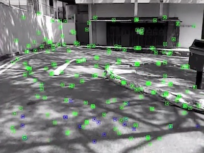

My name is Marcin Panasiuk and I am a software engineer. I am interested in realtime graphics and high performance computing. Here you can find some projects I contributed to over last years.

Worked with computer vision team to develop realtime SLAM system for Android. Contributed to relocalization module, testing and profiling pipelines, visualization toolkits and Android integration layer.
Worked with R&D team to make chromium browser scalable backend service. Built fully-automated battery-drain measurement lab for Opera Desktop. Implemented web scrapper service for article recommendation system.
Spent two years in the Techland working on Chrome engine used in AAA game - Dying Light. Contributed to graphics pipeline optimizations, particle system, video rendering and asset creation pipeline. Amazing two years spent with incredible people.
A character controller created in XNA just before the framework was abandoned by the Microsoft. Forward rendering with dual paraboloid shadow maps, particles and snow accumulation effects. My humble tribute to this great framework. Watch the world turn white!
A terrain renderer based on CDLOD technique allowing dynamic terrain modifications with vertex texture fetches. Sky rendering implemented with Hoffman-Preetham atmospheric scattering model.
A horror game demo built for the local competition with Jakub Stasiak and Grzegorz Kocjan. Designed the overall engine architecture, implemented rendering pipeline and physics integration. Being the first game we wrote together it had lots of overengineering (all cool programmers make script systems, duh!) and exploratory code. Overall great learning experience, which got me interested in game engine design.